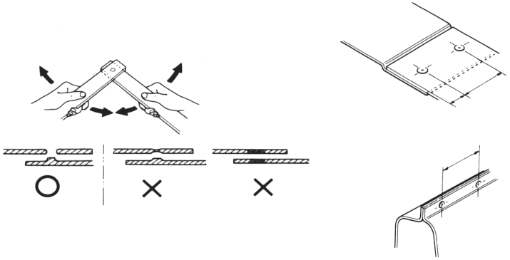
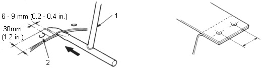

Welding Methods
|
2-18 |
Welding Strength Test
Even if you perform the welding according to the proper conditions, the strength of the welded sections may fluctuate due to drops in the voltage and other factors. The quality of the welding cannot be evaluated unless the welded sections are destroyed.
Provide yourself with a steel plate of the same thickness and conduct a destruction test.

 |
|
NOTE:
It is difficult to perform spot welding in the following circumstances:
In all these cases, the gas welding method should be employed. Moreover, if it is not possible to perform spot welding because of space restrictions, plug welding using on the arc welding method may be performed instead. For plug welding, the sections to be welded must be close together.